Franchise record book · FBL
Santo Domingo Gallos
Seasons covered: 2002–2002. Only games played for this franchise count.
This club has no pre-2002 history in the export, so its record book is the 2002 season to date. Rate records need 3.1 PA or 1 inning per team game.
Home runs
| # | Player | Season | Team | Home runs |
|---|---|---|---|---|
| #1 | 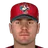 Kevin Orie • | 2002 (FBL) |  Santo Domingo Gallos Santo Domingo Gallos | 5 |
| #2 | Morgan Burkhart • | 2002 (FBL) | Santo Domingo Gallos | 4 |
| #3 | 2002 (FBL) | Santo Domingo Gallos | 4 | |
| #4 | Trot Nixon • | 2002 (FBL) | Santo Domingo Gallos | 4 |
| #5 | 2002 (FBL) | Santo Domingo Gallos | 3 | |
| #6 | 2002 (FBL) | Santo Domingo Gallos | 3 | |
| #7 | 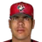 Ricky Ledee • | 2002 (FBL) | Santo Domingo Gallos | 2 |
| #8 | 2002 (FBL) | Santo Domingo Gallos | 2 | |
| #9 | 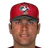 Victor Martinez • | 2002 (FBL) | Santo Domingo Gallos | 2 |
| #10 | 2002 (FBL) | Santo Domingo Gallos | 1 |
Hits
| # | Player | Season | Team | Hits |
|---|---|---|---|---|
| #1 | 2002 (FBL) | Santo Domingo Gallos | 45 | |
| #2 | Trot Nixon • | 2002 (FBL) | Santo Domingo Gallos | 42 |
| #3 | 2002 (FBL) | Santo Domingo Gallos | 41 | |
| #4 | Morgan Burkhart • | 2002 (FBL) | Santo Domingo Gallos | 40 |
| #5 | Victor Martinez • | 2002 (FBL) | Santo Domingo Gallos | 39 |
| #6 | 2002 (FBL) | Santo Domingo Gallos | 38 | |
| #7 | Ricky Ledee • | 2002 (FBL) | Santo Domingo Gallos | 33 |
| #8 | 2002 (FBL) | Santo Domingo Gallos | 29 | |
| #9 | Kevin Orie • | 2002 (FBL) | Santo Domingo Gallos | 29 |
| #10 | 2002 (FBL) | Santo Domingo Gallos | 26 |
RBI
| # | Player | Season | Team | RBI |
|---|---|---|---|---|
| #1 | Trot Nixon • | 2002 (FBL) | Santo Domingo Gallos | 24 |
| #2 | 2002 (FBL) | Santo Domingo Gallos | 22 | |
| #3 | 2002 (FBL) | Santo Domingo Gallos | 22 | |
| #4 | Morgan Burkhart • | 2002 (FBL) | Santo Domingo Gallos | 19 |
| #5 | Victor Martinez • | 2002 (FBL) | Santo Domingo Gallos | 18 |
| #6 | Ricky Ledee • | 2002 (FBL) | Santo Domingo Gallos | 17 |
| #7 | Kevin Orie • | 2002 (FBL) | Santo Domingo Gallos | 17 |
| #8 | 2002 (FBL) | Santo Domingo Gallos | 15 | |
| #9 | 2002 (FBL) | Santo Domingo Gallos | 14 | |
| #10 | 2002 (FBL) | Santo Domingo Gallos | 13 |
Runs
| # | Player | Season | Team | Runs |
|---|---|---|---|---|
| #1 | 2002 (FBL) | Santo Domingo Gallos | 35 | |
| #2 | Victor Martinez • | 2002 (FBL) | Santo Domingo Gallos | 23 |
| #3 | Morgan Burkhart • | 2002 (FBL) | Santo Domingo Gallos | 22 |
| #4 | 2002 (FBL) | Santo Domingo Gallos | 21 | |
| #5 | Trot Nixon • | 2002 (FBL) | Santo Domingo Gallos | 21 |
| #6 | 2002 (FBL) | Santo Domingo Gallos | 19 | |
| #7 | 2002 (FBL) | Santo Domingo Gallos | 17 | |
| #8 | Ricky Ledee • | 2002 (FBL) | Santo Domingo Gallos | 16 |
| #9 | Kevin Orie • | 2002 (FBL) | Santo Domingo Gallos | 16 |
| #10 | 2002 (FBL) | Santo Domingo Gallos | 9 |
Stolen bases
| # | Player | Season | Team | Stolen bases |
|---|---|---|---|---|
| #1 | 2002 (FBL) | Santo Domingo Gallos | 15 | |
| #2 | 2002 (FBL) | Santo Domingo Gallos | 6 | |
| #3 | 2002 (FBL) | Santo Domingo Gallos | 5 | |
| #4 | 2002 (FBL) | Santo Domingo Gallos | 4 | |
| #5 | 2002 (FBL) | Santo Domingo Gallos | 3 | |
| #6 | Trot Nixon • | 2002 (FBL) | Santo Domingo Gallos | 2 |
| #7 | Ricky Ledee • | 2002 (FBL) | Santo Domingo Gallos | 1 |
| #8 | Kevin Orie • | 2002 (FBL) | Santo Domingo Gallos | 1 |
| #9 | Victor Martinez • | 2002 (FBL) | Santo Domingo Gallos | 1 |
| #10 | Morgan Burkhart • | 2002 (FBL) | Santo Domingo Gallos | 0 |
Doubles
| # | Player | Season | Team | Doubles |
|---|---|---|---|---|
| #1 | 2002 (FBL) | Santo Domingo Gallos | 13 | |
| #2 | Trot Nixon • | 2002 (FBL) | Santo Domingo Gallos | 10 |
| #3 | Morgan Burkhart • | 2002 (FBL) | Santo Domingo Gallos | 9 |
| #4 | 2002 (FBL) | Santo Domingo Gallos | 9 | |
| #5 | 2002 (FBL) | Santo Domingo Gallos | 7 | |
| #6 | Victor Martinez • | 2002 (FBL) | Santo Domingo Gallos | 7 |
| #7 | Ricky Ledee • | 2002 (FBL) | Santo Domingo Gallos | 6 |
| #8 | 2002 (FBL) | Santo Domingo Gallos | 6 | |
| #9 | Kevin Orie • | 2002 (FBL) | Santo Domingo Gallos | 3 |
| #10 | 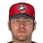 Scott Hatteberg • | 2002 (FBL) | Santo Domingo Gallos | 3 |
Triples
| # | Player | Season | Team | Triples |
|---|---|---|---|---|
| #1 | 2002 (FBL) | Santo Domingo Gallos | 2 | |
| #2 | 2002 (FBL) | Santo Domingo Gallos | 2 | |
| #3 | 2002 (FBL) | Santo Domingo Gallos | 2 | |
| #4 | Trot Nixon • | 2002 (FBL) | Santo Domingo Gallos | 2 |
| #5 | Ricky Ledee • | 2002 (FBL) | Santo Domingo Gallos | 1 |
| #6 | Morgan Burkhart • | 2002 (FBL) | Santo Domingo Gallos | 0 |
| #7 | 2002 (FBL) | Santo Domingo Gallos | 0 | |
| #8 | Kevin Orie • | 2002 (FBL) | Santo Domingo Gallos | 0 |
| #9 | 2002 (FBL) | Santo Domingo Gallos | 0 | |
| #10 | Scott Hatteberg • | 2002 (FBL) | Santo Domingo Gallos | 0 |
Walks
| # | Player | Season | Team | Walks |
|---|---|---|---|---|
| #1 | 2002 (FBL) | Santo Domingo Gallos | 21 | |
| #2 | 2002 (FBL) | Santo Domingo Gallos | 20 | |
| #3 | Ricky Ledee • | 2002 (FBL) | Santo Domingo Gallos | 17 |
| #4 | Trot Nixon • | 2002 (FBL) | Santo Domingo Gallos | 17 |
| #5 | Kevin Orie • | 2002 (FBL) | Santo Domingo Gallos | 16 |
| #6 | Morgan Burkhart • | 2002 (FBL) | Santo Domingo Gallos | 15 |
| #7 | Victor Martinez • | 2002 (FBL) | Santo Domingo Gallos | 14 |
| #8 | 2002 (FBL) | Santo Domingo Gallos | 11 | |
| #9 | Scott Hatteberg • | 2002 (FBL) | Santo Domingo Gallos | 5 |
| #10 | 2002 (FBL) | Santo Domingo Gallos | 5 |
Total bases
| # | Player | Season | Team | Total bases |
|---|---|---|---|---|
| #1 | Trot Nixon • | 2002 (FBL) | Santo Domingo Gallos | 68 |
| #2 | 2002 (FBL) | Santo Domingo Gallos | 65 | |
| #3 | 2002 (FBL) | Santo Domingo Gallos | 63 | |
| #4 | Morgan Burkhart • | 2002 (FBL) | Santo Domingo Gallos | 61 |
| #5 | 2002 (FBL) | Santo Domingo Gallos | 57 | |
| #6 | Victor Martinez • | 2002 (FBL) | Santo Domingo Gallos | 52 |
| #7 | Ricky Ledee • | 2002 (FBL) | Santo Domingo Gallos | 47 |
| #8 | Kevin Orie • | 2002 (FBL) | Santo Domingo Gallos | 47 |
| #9 | 2002 (FBL) | Santo Domingo Gallos | 42 | |
| #10 | 2002 (FBL) | Santo Domingo Gallos | 41 |
Batting average qualified
| # | Player | Season | Team | Batting average |
|---|---|---|---|---|
| #1 | 2002 (FBL) | Santo Domingo Gallos | .308 | |
| #2 | Morgan Burkhart • | 2002 (FBL) | Santo Domingo Gallos | .305 |
| #3 | Victor Martinez • | 2002 (FBL) | Santo Domingo Gallos | .289 |
| #4 | 2002 (FBL) | Santo Domingo Gallos | .288 | |
| #5 | Ricky Ledee • | 2002 (FBL) | Santo Domingo Gallos | .287 |
| #6 | Trot Nixon • | 2002 (FBL) | Santo Domingo Gallos | .276 |
| #7 | 2002 (FBL) | Santo Domingo Gallos | .258 | |
| #8 | 2002 (FBL) | Santo Domingo Gallos | .228 | |
| #9 | Kevin Orie • | 2002 (FBL) | Santo Domingo Gallos | .210 |
On-base % qualified
| # | Player | Season | Team | On-base % |
|---|---|---|---|---|
| #1 | 2002 (FBL) | Santo Domingo Gallos | .400 | |
| #2 | Ricky Ledee • | 2002 (FBL) | Santo Domingo Gallos | .381 |
| #3 | Morgan Burkhart • | 2002 (FBL) | Santo Domingo Gallos | .372 |
| #4 | Victor Martinez • | 2002 (FBL) | Santo Domingo Gallos | .356 |
| #5 | Trot Nixon • | 2002 (FBL) | Santo Domingo Gallos | .351 |
| #6 | 2002 (FBL) | Santo Domingo Gallos | .340 | |
| #7 | 2002 (FBL) | Santo Domingo Gallos | .317 | |
| #8 | 2002 (FBL) | Santo Domingo Gallos | .316 | |
| #9 | Kevin Orie • | 2002 (FBL) | Santo Domingo Gallos | .306 |
Slugging % qualified
| # | Player | Season | Team | Slugging % |
|---|---|---|---|---|
| #1 | Morgan Burkhart • | 2002 (FBL) | Santo Domingo Gallos | .466 |
| #2 | Trot Nixon • | 2002 (FBL) | Santo Domingo Gallos | .447 |
| #3 | 2002 (FBL) | Santo Domingo Gallos | .445 | |
| #4 | 2002 (FBL) | Santo Domingo Gallos | .432 | |
| #5 | Ricky Ledee • | 2002 (FBL) | Santo Domingo Gallos | .409 |
| #6 | 2002 (FBL) | Santo Domingo Gallos | .396 | |
| #7 | Victor Martinez • | 2002 (FBL) | Santo Domingo Gallos | .385 |
| #8 | Kevin Orie • | 2002 (FBL) | Santo Domingo Gallos | .341 |
| #9 | 2002 (FBL) | Santo Domingo Gallos | .323 |
OPS qualified
| # | Player | Season | Team | OPS |
|---|---|---|---|---|
| #1 | 2002 (FBL) | Santo Domingo Gallos | .845 | |
| #2 | Morgan Burkhart • | 2002 (FBL) | Santo Domingo Gallos | .837 |
| #3 | Trot Nixon • | 2002 (FBL) | Santo Domingo Gallos | .798 |
| #4 | Ricky Ledee • | 2002 (FBL) | Santo Domingo Gallos | .789 |
| #5 | 2002 (FBL) | Santo Domingo Gallos | .748 | |
| #6 | Victor Martinez • | 2002 (FBL) | Santo Domingo Gallos | .741 |
| #7 | 2002 (FBL) | Santo Domingo Gallos | .712 | |
| #8 | 2002 (FBL) | Santo Domingo Gallos | .663 | |
| #9 | Kevin Orie • | 2002 (FBL) | Santo Domingo Gallos | .646 |
WAR (OOTP)
| # | Player | Season | Team | WAR (OOTP) |
|---|---|---|---|---|
| #1 | 2002 (FBL) | Santo Domingo Gallos | 1.0 | |
| #2 | 2002 (FBL) | Santo Domingo Gallos | 0.8 | |
| #3 | 2002 (FBL) | Santo Domingo Gallos | 0.7 | |
| #4 | 2002 (FBL) | Santo Domingo Gallos | 0.5 | |
| #5 | Morgan Burkhart • | 2002 (FBL) | Santo Domingo Gallos | 0.2 |
| #6 | Victor Martinez • | 2002 (FBL) | Santo Domingo Gallos | 0.2 |
| #7 | Ricky Ledee • | 2002 (FBL) | Santo Domingo Gallos | 0.2 |
| #8 | Trot Nixon • | 2002 (FBL) | Santo Domingo Gallos | 0.2 |
| #9 | 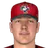 Mike Edwards • | 2002 (FBL) | Santo Domingo Gallos | 0.2 |
| #10 | Scott Hatteberg • | 2002 (FBL) | Santo Domingo Gallos | 0.2 |
Wins
| # | Player | Season | Team | Wins |
|---|---|---|---|---|
| #1 | 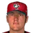 Darren Dreifort • | 2002 (FBL) | Santo Domingo Gallos | 4 |
| #2 | 2002 (FBL) | Santo Domingo Gallos | 3 | |
| #3 | 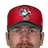 Kyle Farnsworth • | 2002 (FBL) | Santo Domingo Gallos | 3 |
| #4 | 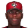 Pat Mahomes • | 2002 (FBL) | Santo Domingo Gallos | 2 |
| #5 | 2002 (FBL) | Santo Domingo Gallos | 2 | |
| #6 | 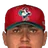 Alejandro Armenta • | 2002 (FBL) | Santo Domingo Gallos | 2 |
| #7 | 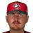 Craig Dingman • | 2002 (FBL) | Santo Domingo Gallos | 1 |
| #8 | 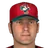 Kevin Jarvis • | 2002 (FBL) | Santo Domingo Gallos | 1 |
| #9 | 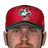 Heath Bell • | 2002 (FBL) | Santo Domingo Gallos | 1 |
| #10 | 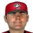 Billy Traber • | 2002 (FBL) | Santo Domingo Gallos | 1 |
Strikeouts
| # | Player | Season | Team | Strikeouts |
|---|---|---|---|---|
| #1 | 2002 (FBL) | Santo Domingo Gallos | 64 | |
| #2 | Darren Dreifort • | 2002 (FBL) | Santo Domingo Gallos | 43 |
| #3 | 2002 (FBL) | Santo Domingo Gallos | 28 | |
| #4 | 2002 (FBL) | Santo Domingo Gallos | 26 | |
| #5 | Kevin Jarvis • | 2002 (FBL) | Santo Domingo Gallos | 24 |
| #6 | Craig Dingman • | 2002 (FBL) | Santo Domingo Gallos | 16 |
| #7 | Kyle Farnsworth • | 2002 (FBL) | Santo Domingo Gallos | 14 |
| #8 | 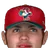 Eric Schmitt • | 2002 (FBL) | Santo Domingo Gallos | 14 |
| #9 | Heath Bell • | 2002 (FBL) | Santo Domingo Gallos | 12 |
| #10 | Billy Traber • | 2002 (FBL) | Santo Domingo Gallos | 12 |
Saves
| # | Player | Season | Team | Saves |
|---|---|---|---|---|
| #1 | Kyle Farnsworth • | 2002 (FBL) | Santo Domingo Gallos | 6 |
| #2 | Billy Traber • | 2002 (FBL) | Santo Domingo Gallos | 2 |
| #3 | Eric Schmitt • | 2002 (FBL) | Santo Domingo Gallos | 2 |
| #4 | Heath Bell • | 2002 (FBL) | Santo Domingo Gallos | 1 |
| #5 | 2002 (FBL) | Santo Domingo Gallos | 0 | |
| #6 | Craig Dingman • | 2002 (FBL) | Santo Domingo Gallos | 0 |
| #7 | Kevin Jarvis • | 2002 (FBL) | Santo Domingo Gallos | 0 |
| #8 | Pat Mahomes • | 2002 (FBL) | Santo Domingo Gallos | 0 |
| #9 | Darren Dreifort • | 2002 (FBL) | Santo Domingo Gallos | 0 |
| #10 | 2002 (FBL) | Santo Domingo Gallos | 0 |
Innings
| # | Player | Season | Team | Innings |
|---|---|---|---|---|
| #1 | 2002 (FBL) | Santo Domingo Gallos | 66.1 | |
| #2 | Darren Dreifort • | 2002 (FBL) | Santo Domingo Gallos | 42.1 |
| #3 | 2002 (FBL) | Santo Domingo Gallos | 42.1 | |
| #4 | 2002 (FBL) | Santo Domingo Gallos | 41.1 | |
| #5 | Kevin Jarvis • | 2002 (FBL) | Santo Domingo Gallos | 37.1 |
| #6 | Alejandro Armenta • | 2002 (FBL) | Santo Domingo Gallos | 25.1 |
| #7 | Eric Schmitt • | 2002 (FBL) | Santo Domingo Gallos | 20.2 |
| #8 | Heath Bell • | 2002 (FBL) | Santo Domingo Gallos | 20.1 |
| #9 | Pat Mahomes • | 2002 (FBL) | Santo Domingo Gallos | 15.0 |
| #10 | Craig Dingman • | 2002 (FBL) | Santo Domingo Gallos | 14.1 |
Complete games
| # | Player | Season | Team | Complete games |
|---|---|---|---|---|
| #1 | 2002 (FBL) | Santo Domingo Gallos | 1 | |
| #2 | Craig Dingman • | 2002 (FBL) | Santo Domingo Gallos | 0 |
| #3 | Kevin Jarvis • | 2002 (FBL) | Santo Domingo Gallos | 0 |
| #4 | Pat Mahomes • | 2002 (FBL) | Santo Domingo Gallos | 0 |
| #5 | Kyle Farnsworth • | 2002 (FBL) | Santo Domingo Gallos | 0 |
| #6 | Darren Dreifort • | 2002 (FBL) | Santo Domingo Gallos | 0 |
| #7 | 2002 (FBL) | Santo Domingo Gallos | 0 | |
| #8 | 2002 (FBL) | Santo Domingo Gallos | 0 | |
| #9 | Heath Bell • | 2002 (FBL) | Santo Domingo Gallos | 0 |
| #10 | Alejandro Armenta • | 2002 (FBL) | Santo Domingo Gallos | 0 |
Shutouts
| # | Player | Season | Team | Shutouts |
|---|---|---|---|---|
| #1 | 2002 (FBL) | Santo Domingo Gallos | 0 | |
| #2 | Craig Dingman • | 2002 (FBL) | Santo Domingo Gallos | 0 |
| #3 | Kevin Jarvis • | 2002 (FBL) | Santo Domingo Gallos | 0 |
| #4 | Pat Mahomes • | 2002 (FBL) | Santo Domingo Gallos | 0 |
| #5 | Kyle Farnsworth • | 2002 (FBL) | Santo Domingo Gallos | 0 |
| #6 | Darren Dreifort • | 2002 (FBL) | Santo Domingo Gallos | 0 |
| #7 | 2002 (FBL) | Santo Domingo Gallos | 0 | |
| #8 | 2002 (FBL) | Santo Domingo Gallos | 0 | |
| #9 | Heath Bell • | 2002 (FBL) | Santo Domingo Gallos | 0 |
| #10 | Alejandro Armenta • | 2002 (FBL) | Santo Domingo Gallos | 0 |
ERA qualified
| # | Player | Season | Team | ERA |
|---|---|---|---|---|
| #1 | 2002 (FBL) | Santo Domingo Gallos | 3.93 | |
| #2 | 2002 (FBL) | Santo Domingo Gallos | 4.04 | |
| #3 | Darren Dreifort • | 2002 (FBL) | Santo Domingo Gallos | 5.74 |
| #4 | 2002 (FBL) | Santo Domingo Gallos | 8.49 |
WHIP qualified
| # | Player | Season | Team | WHIP |
|---|---|---|---|---|
| #1 | 2002 (FBL) | Santo Domingo Gallos | 1.19 | |
| #2 | 2002 (FBL) | Santo Domingo Gallos | 1.54 | |
| #3 | Darren Dreifort • | 2002 (FBL) | Santo Domingo Gallos | 1.68 |
| #4 | 2002 (FBL) | Santo Domingo Gallos | 1.72 |
K/9 qualified
| # | Player | Season | Team | K/9 |
|---|---|---|---|---|
| #1 | Darren Dreifort • | 2002 (FBL) | Santo Domingo Gallos | 9.1 |
| #2 | 2002 (FBL) | Santo Domingo Gallos | 8.7 | |
| #3 | 2002 (FBL) | Santo Domingo Gallos | 6.1 | |
| #4 | 2002 (FBL) | Santo Domingo Gallos | 5.5 |
WAR (OOTP)
| # | Player | Season | Team | WAR (OOTP) |
|---|---|---|---|---|
| #1 | 2002 (FBL) | Santo Domingo Gallos | 1.6 | |
| #2 | Kevin Jarvis • | 2002 (FBL) | Santo Domingo Gallos | 0.6 |
| #3 | Heath Bell • | 2002 (FBL) | Santo Domingo Gallos | 0.4 |
| #4 | 2002 (FBL) | Santo Domingo Gallos | 0.3 | |
| #5 | Kyle Farnsworth • | 2002 (FBL) | Santo Domingo Gallos | 0.3 |
| #6 | Billy Traber • | 2002 (FBL) | Santo Domingo Gallos | 0.1 |
| #7 | Darren Dreifort • | 2002 (FBL) | Santo Domingo Gallos | 0.1 |
| #8 | Pat Mahomes • | 2002 (FBL) | Santo Domingo Gallos | -0.1 |
| #9 | Eric Schmitt • | 2002 (FBL) | Santo Domingo Gallos | -0.1 |
| #10 | 2002 (FBL) | Santo Domingo Gallos | -0.2 |
Home runs
| # | Player | Years | Home runs |
|---|---|---|---|
| #1 | Kevin Orie • | 1997–02 | 5 |
| #2 | Morgan Burkhart • | 2000–02 | 4 |
| #3 | 1998–02 | 4 | |
| #4 | Trot Nixon • | 1996–02 | 4 |
| #5 | 1987–02 | 3 | |
| #6 | 2002–02 | 3 | |
| #7 | Ricky Ledee • | 1998–02 | 2 |
| #8 | 1994–02 | 2 | |
| #9 | Victor Martinez • | 2002–02 | 2 |
| #10 | 2001–02 | 1 |
Hits
| # | Player | Years | Hits |
|---|---|---|---|
| #1 | 2001–02 | 45 | |
| #2 | Trot Nixon • | 1996–02 | 42 |
| #3 | 2002–02 | 41 | |
| #4 | Morgan Burkhart • | 2000–02 | 40 |
| #5 | Victor Martinez • | 2002–02 | 39 |
| #6 | 1998–02 | 38 | |
| #7 | Ricky Ledee • | 1998–02 | 33 |
| #8 | 1994–02 | 29 | |
| #9 | Kevin Orie • | 1997–02 | 29 |
| #10 | 1987–02 | 26 |
RBI
| # | Player | Years | RBI |
|---|---|---|---|
| #1 | Trot Nixon • | 1996–02 | 24 |
| #2 | 1998–02 | 22 | |
| #3 | 2002–02 | 22 | |
| #4 | Morgan Burkhart • | 2000–02 | 19 |
| #5 | Victor Martinez • | 2002–02 | 18 |
| #6 | Ricky Ledee • | 1998–02 | 17 |
| #7 | Kevin Orie • | 1997–02 | 17 |
| #8 | 1994–02 | 15 | |
| #9 | 2001–02 | 14 | |
| #10 | 1987–02 | 13 |
Runs
| # | Player | Years | Runs |
|---|---|---|---|
| #1 | 2001–02 | 35 | |
| #2 | Victor Martinez • | 2002–02 | 23 |
| #3 | Morgan Burkhart • | 2000–02 | 22 |
| #4 | 1994–02 | 21 | |
| #5 | Trot Nixon • | 1996–02 | 21 |
| #6 | 2002–02 | 19 | |
| #7 | 1998–02 | 17 | |
| #8 | Ricky Ledee • | 1998–02 | 16 |
| #9 | Kevin Orie • | 1997–02 | 16 |
| #10 | 1987–02 | 9 |
Stolen bases
| # | Player | Years | Stolen bases |
|---|---|---|---|
| #1 | 2001–02 | 15 | |
| #2 | 1994–02 | 6 | |
| #3 | 2002–02 | 5 | |
| #4 | 1987–02 | 4 | |
| #5 | 1998–02 | 3 | |
| #6 | Trot Nixon • | 1996–02 | 2 |
| #7 | Ricky Ledee • | 1998–02 | 1 |
| #8 | Kevin Orie • | 1997–02 | 1 |
| #9 | Victor Martinez • | 2002–02 | 1 |
| #10 | Morgan Burkhart • | 2000–02 | 0 |
Doubles
| # | Player | Years | Doubles |
|---|---|---|---|
| #1 | 2001–02 | 13 | |
| #2 | Trot Nixon • | 1996–02 | 10 |
| #3 | Morgan Burkhart • | 2000–02 | 9 |
| #4 | 2002–02 | 9 | |
| #5 | 1998–02 | 7 | |
| #6 | Victor Martinez • | 2002–02 | 7 |
| #7 | Ricky Ledee • | 1998–02 | 6 |
| #8 | 1994–02 | 6 | |
| #9 | Kevin Orie • | 1997–02 | 3 |
| #10 | Scott Hatteberg • | 1995–02 | 3 |
Triples
| # | Player | Years | Triples |
|---|---|---|---|
| #1 | 2001–02 | 2 | |
| #2 | 1987–02 | 2 | |
| #3 | 2002–02 | 2 | |
| #4 | Trot Nixon • | 1996–02 | 2 |
| #5 | Ricky Ledee • | 1998–02 | 1 |
| #6 | Morgan Burkhart • | 2000–02 | 0 |
| #7 | 1994–02 | 0 | |
| #8 | Kevin Orie • | 1997–02 | 0 |
| #9 | 1999–02 | 0 | |
| #10 | Scott Hatteberg • | 1995–02 | 0 |
Walks
| # | Player | Years | Walks |
|---|---|---|---|
| #1 | 1994–02 | 21 | |
| #2 | 2001–02 | 20 | |
| #3 | Ricky Ledee • | 1998–02 | 17 |
| #4 | Trot Nixon • | 1996–02 | 17 |
| #5 | Kevin Orie • | 1997–02 | 16 |
| #6 | Morgan Burkhart • | 2000–02 | 15 |
| #7 | Victor Martinez • | 2002–02 | 14 |
| #8 | 2002–02 | 11 | |
| #9 | Scott Hatteberg • | 1995–02 | 5 |
| #10 | 1998–02 | 5 |
Total bases
| # | Player | Years | Total bases |
|---|---|---|---|
| #1 | Trot Nixon • | 1996–02 | 68 |
| #2 | 2001–02 | 65 | |
| #3 | 2002–02 | 63 | |
| #4 | Morgan Burkhart • | 2000–02 | 61 |
| #5 | 1998–02 | 57 | |
| #6 | Victor Martinez • | 2002–02 | 52 |
| #7 | Ricky Ledee • | 1998–02 | 47 |
| #8 | Kevin Orie • | 1997–02 | 47 |
| #9 | 1987–02 | 42 | |
| #10 | 1994–02 | 41 |
Batting average min 2,000 PA
| # | Player | Years | Batting average |
|---|
On-base % min 2,000 PA
| # | Player | Years | On-base % |
|---|
Slugging % min 2,000 PA
| # | Player | Years | Slugging % |
|---|
OPS min 2,000 PA
| # | Player | Years | OPS |
|---|
WAR (OOTP)
| # | Player | Years | WAR (OOTP) |
|---|---|---|---|
| #1 | 1994–02 | 1.0 | |
| #2 | 2001–02 | 0.8 | |
| #3 | 2002–02 | 0.7 | |
| #4 | 1987–02 | 0.5 | |
| #5 | Morgan Burkhart • | 2000–02 | 0.2 |
| #6 | Victor Martinez • | 2002–02 | 0.2 |
| #7 | Ricky Ledee • | 1998–02 | 0.2 |
| #8 | Trot Nixon • | 1996–02 | 0.2 |
| #9 | Mike Edwards • | 2002–02 | 0.2 |
| #10 | Scott Hatteberg • | 1995–02 | 0.2 |
Wins
| # | Player | Years | Wins |
|---|---|---|---|
| #1 | Darren Dreifort • | 1994–02 | 4 |
| #2 | 1998–02 | 3 | |
| #3 | Kyle Farnsworth • | 1999–02 | 3 |
| #4 | Pat Mahomes • | 1992–02 | 2 |
| #5 | 2001–02 | 2 | |
| #6 | Alejandro Armenta • | 2002–02 | 2 |
| #7 | Craig Dingman • | 2000–02 | 1 |
| #8 | Kevin Jarvis • | 1994–02 | 1 |
| #9 | Heath Bell • | 2002–02 | 1 |
| #10 | Billy Traber • | 2002–02 | 1 |
Strikeouts
| # | Player | Years | Strikeouts |
|---|---|---|---|
| #1 | 1998–02 | 64 | |
| #2 | Darren Dreifort • | 1994–02 | 43 |
| #3 | 1991–02 | 28 | |
| #4 | 2001–02 | 26 | |
| #5 | Kevin Jarvis • | 1994–02 | 24 |
| #6 | Craig Dingman • | 2000–02 | 16 |
| #7 | Kyle Farnsworth • | 1999–02 | 14 |
| #8 | Eric Schmitt • | 2002–02 | 14 |
| #9 | Heath Bell • | 2002–02 | 12 |
| #10 | Billy Traber • | 2002–02 | 12 |
Saves
| # | Player | Years | Saves |
|---|---|---|---|
| #1 | Kyle Farnsworth • | 1999–02 | 6 |
| #2 | Billy Traber • | 2002–02 | 2 |
| #3 | Eric Schmitt • | 2002–02 | 2 |
| #4 | Heath Bell • | 2002–02 | 1 |
| #5 | 1998–02 | 0 | |
| #6 | Craig Dingman • | 2000–02 | 0 |
| #7 | Kevin Jarvis • | 1994–02 | 0 |
| #8 | Pat Mahomes • | 1992–02 | 0 |
| #9 | Darren Dreifort • | 1994–02 | 0 |
| #10 | 1991–02 | 0 |
Innings
| # | Player | Years | Innings |
|---|---|---|---|
| #1 | 1998–02 | 66.1 | |
| #2 | Darren Dreifort • | 1994–02 | 42.1 |
| #3 | 2001–02 | 42.1 | |
| #4 | 1991–02 | 41.1 | |
| #5 | Kevin Jarvis • | 1994–02 | 37.1 |
| #6 | Alejandro Armenta • | 2002–02 | 25.1 |
| #7 | Eric Schmitt • | 2002–02 | 20.2 |
| #8 | Heath Bell • | 2002–02 | 20.1 |
| #9 | Pat Mahomes • | 1992–02 | 15.0 |
| #10 | Craig Dingman • | 2000–02 | 14.1 |
Complete games
| # | Player | Years | Complete games |
|---|---|---|---|
| #1 | 1998–02 | 1 | |
| #2 | Craig Dingman • | 2000–02 | 0 |
| #3 | Kevin Jarvis • | 1994–02 | 0 |
| #4 | Pat Mahomes • | 1992–02 | 0 |
| #5 | Kyle Farnsworth • | 1999–02 | 0 |
| #6 | Darren Dreifort • | 1994–02 | 0 |
| #7 | 1991–02 | 0 | |
| #8 | 2001–02 | 0 | |
| #9 | Heath Bell • | 2002–02 | 0 |
| #10 | Alejandro Armenta • | 2002–02 | 0 |
Shutouts
| # | Player | Years | Shutouts |
|---|---|---|---|
| #1 | 1998–02 | 0 | |
| #2 | Craig Dingman • | 2000–02 | 0 |
| #3 | Kevin Jarvis • | 1994–02 | 0 |
| #4 | Pat Mahomes • | 1992–02 | 0 |
| #5 | Kyle Farnsworth • | 1999–02 | 0 |
| #6 | Darren Dreifort • | 1994–02 | 0 |
| #7 | 1991–02 | 0 | |
| #8 | 2001–02 | 0 | |
| #9 | Heath Bell • | 2002–02 | 0 |
| #10 | Alejandro Armenta • | 2002–02 | 0 |
ERA min 500 IP
| # | Player | Years | ERA |
|---|
WHIP min 500 IP
| # | Player | Years | WHIP |
|---|
K/9 min 500 IP
| # | Player | Years | K/9 |
|---|
WAR (OOTP)
| # | Player | Years | WAR (OOTP) |
|---|---|---|---|
| #1 | 1998–02 | 1.6 | |
| #2 | Kevin Jarvis • | 1994–02 | 0.6 |
| #3 | Heath Bell • | 2002–02 | 0.4 |
| #4 | 2001–02 | 0.3 | |
| #5 | Kyle Farnsworth • | 1999–02 | 0.3 |
| #6 | Billy Traber • | 2002–02 | 0.1 |
| #7 | Darren Dreifort • | 1994–02 | 0.1 |
| #8 | Pat Mahomes • | 1992–02 | -0.1 |
| #9 | Eric Schmitt • | 2002–02 | -0.1 |
| #10 | 1991–02 | -0.2 |